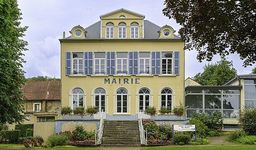
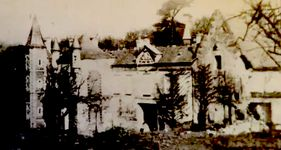
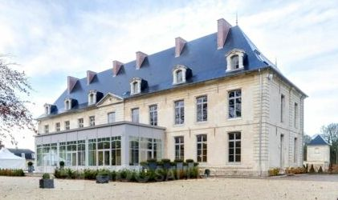

Recensement Jean-Claude Truffet
| Département | 62 — Pas-de-Calais |
| Canton | Outreau |
| Commune | St Etienne au mont |
| Type d'édifice | Châteaux |
| Période d'origine | XVII-XVIII-XIX-XX |
| Coordonnées GPS | 50° 40' 42" Nord, 1° 37' 45" Est |



trois châteaux dans cet article; St Etienne du mont, Audisque et Calonne. AUDISQUE, gentilhommière plutôt que château construction Typique de la région boulonnaise, derrière une haute grille en fer forgé, le château d'Audisque, de plan rectangulaire, a été construit pour la famille de Lafitte au XVIIIe siècle; date 1747 gravée dans une pierre au sommet du pignon droit. La façade donnant sur le jardin, contruite sur deux niveaux, tire son charme de lordonnance symétrique de ses nombreuses baies à petits carreaux. La façade opposée est identique mais moins haute, le rez de chaussée étant de ce côté à demi enterré à cause de la pente du terrain. Elle est précédée dune cour pavée de grès, et encadrée de bâtiments jadis à usage de remises et décuries. Le château fut la propriété d'Hortense de Beauharnais et de Caroline Bonaparte. Joachim Murat. Famille de Boysson-Houzel en sont propriétaires.
SAINT-ETIENNE au Mont, à l'origine, cette imposante bâtisse trônait au centre d'une vaste propriété appartenant jusqu'en 1780 à Gabriel Antoine Magnion, sieur de La Cassaigne, demeurant à Paris. En 1780, M. Bernard- Gros avocat au Parlement et à la dite Sénéchaussée du Boulonnais, demeurant à la Haute Ville est devenu propriétaire du fief et de la ferme de La Cassaigne, puis il devint député au Tiers Etat de la Province du Boulonnais, aux états généraux en 1789. A sa mort en 1802, le domaine deveint la propriété de Mme Moullart, baronne de Torcy. En 1892 Mme de Calonne de Torcy en devint propriétaire. A partir de cette date, le château fut communément désigné chateau de Calonne. Le domaine fut alors attribué à Mlle Geneviève de Calonne en 1956. Peu après, il devient propriété des frères Dudart, qui y installèrent un élevage de poulets. En 1984 la commune l'acheta pour y créer un centre culturel et de loisirs.
. CALONNNE, château avec corps central construit au début du premier quart du XIXe siècle, figure sur le plan de cadastre de 1813. Les ailes, la tour et la chapelle sont bâtie à la limite XIXe-XXe siècle. Ferme, grange et étable datées 1703. Hangar daté 1838, signé Berquer, d'autres bâtiments sans doute du XVIIIe siècle, grange agrandie après 1813. L'édifice se compose d'un sous-sol, d'un étage de soubassement, d'un étage carré et d'un étage de comble, escalier dans oeuvre, élévation à travées surmontée de toit à longs pans; pignon couvert ; pignon découvert ; croupe ; toit en pavillon ; toit polygonal et appentis massé brisé, couverts de tuiles flamandes mécaniques et d'ardoise.
Audisque; famille de Lafitte St-Etienne; Famille de Gabriel Antoine Magnion, Calonne; famille de Mlle Geneviève de Calonne "
trois châteaux dans cet article; St Etienne du mont, Audisque grav-1 et Calonne grav_2. Audisque GPS : 50° 40' 42" Nord, 1° 37' 45" Est